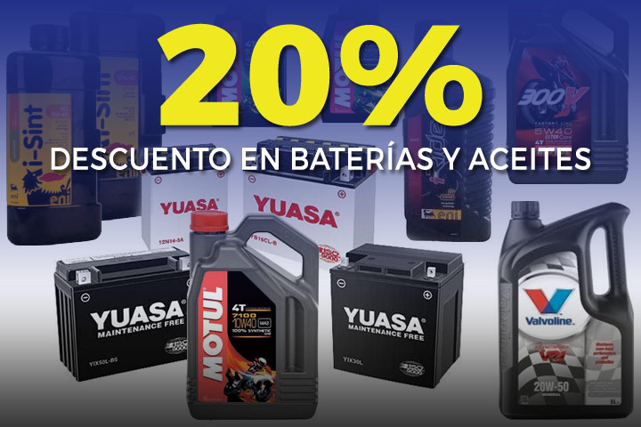
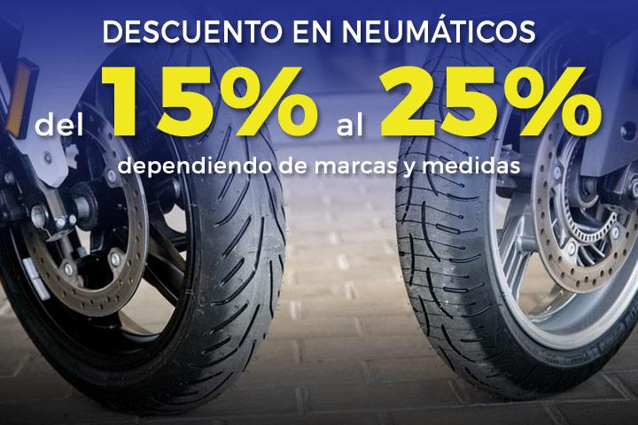

Servicios
- Reparación y mantenimiento de motos:
Estamos concertados con las principales compañías de seguros.
Confíenos las reparaciones de su máquina en caso de accidente. Somos especialistas.Le ofrecemos servicios de mecánica en general y rápida. Cambio y mantenimiento de neumáticos,
electricidad, chapa y pintura, pre ITV, servicio de grúa, recambios originales y de marcas auxiliares, etc.
- Venta de recambios originales y auxiliares:
Disponemos de un amplio catálogo de accesorios y equipación, además de recambios y piezas originales y de segunda mano para la reparación de tu moto.
Muchas veces es difícil encontrar la pieza que necesitas de recambio para la reparación de una motocicleta. En el taller dispones de un amplio stock en piezas descatalogadas y nuevas a muy buen precio,
de diferentes marcas como Piaggio, Vespa, Gilera, Aprilia, Ducati, BMW, Yahama, Suzuki. Además, la gran ventaja, es que si lo necesitas, realizamos la reparación y el cambio de la pieza que necesitas para tu moto,
un servicio completo de taller personalizado para responder a las necesidades de tu moto.
- Cambio de neumáticos:
Los neumáticos constituyen el único punto de contacto entre el vehículo y el suelo. Si los revisas regularmente durarán más. Es conveniente comprobar cada poco tiempo la profundidad
y el estado de la banda de rodamiento, verificar la presión y prestar atención a los flancos para detectar posibles daños o cualquier signo de desgaste irregular. Si la superficie de la goma de la banda de rodadura está al mismo nivel que estos indicadores,
la profundidad del dibujo esta cerca del límite legal de 1 mm o por debajo del mismo. Antes de llegar a este limite, te recomendamos que pases por el taller y realices el cambio de neumáticos. Estos pueden no proporcionar las prestaciones o agarre necesarios, sobre todo en mojado.
- Gestión ITV:
Es un trámite necesario para circular de forma legal. El objetivo de la inspección ITV es el de comprobar el estado general y los elementos de seguridad del vehículo se encuentran en unas condiciones de mantenimiento
correctos que permitan que el vehículo circule sin que represente un peligro ni para el conductor, ocupantes o para cualquier otra persona o elemento que se encuentre en la vía pública. También se comprueba que el vehículo cumpla los requisitos de respeto al medio ambiente.
La periodicidad para pasar la ITV es cada dos años, una vez el vehículo tenga más de cuatro de circulación. Le ofrecemos un servicio completo de pre-ITV para que cumpla con todos los criterios técnicos.
- Servicio de Grúa:
Si estás circulando con tu moto y necesitas asistencia, nosotros te facilitamos un servicio de grúa para recoger y transportar tu moto hasta el taller donde debe ser reparado. Somos un taller homologado por las grandes compañías aseguradoras,
por lo que no tendrás que correr con ningún gasto adicional, si no es necesario.
Descuentos


Contacto